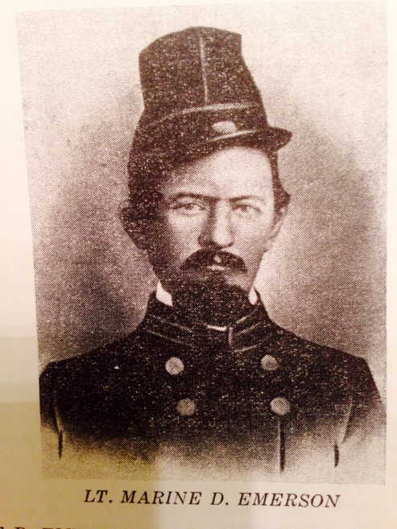

4th cousin 6x removed, Philadelphia Doctor. He was great grandson of Edward Foulke (1651-1741), paternal nephew of 8th great grandmother Elinor
LLOYD. Common paternal ancestor Thomas ap Evan LLOYD Esquire of Nant y Friar, Merioneth Wales (d. 1649). Father of John, Judah Foulke b. 1722, became "prominent citizen of Phila. & man of literary taste & fine
classical attainments". High Sheriff of Phila. County 1770-1772. His father, 2nd cousin 8x removed Cadwallader Foulke, was Justice for Phila. County 1738...

/
Carew Castle, Pembrokeshire Wales
The Norman castle has its origins in a stone keep built by Gerald de Windsor around the year 1100.
His descendants the Carews then added to it, as did Sir Rhys ap Thomas late 1400's & early 1500's. Reverted back to the
Carew family 1600's (Sir John Carew and his son George). Thomas THOMAS Esquire (brother of ?ancestor Richard THOMAS
of Pembrokeshire(b. ca 1600 d. bef. 1670)) of Llanbradach married
Sir John's daughter Dorothy (b. 1604 d. 1678 Rhydlavar Glamorgan).

LEWIS of Van Mansion, Caerphilly Wales
Descendants of this gentry family were Quakers from Glamorgan and Pembroke Wales and strong associates of the THOMAS and REES families in Wales and America... 2
DNA MATCHES to Ralph LEWIS (ca 1640-1712) of Glamorgan Wales and PA, brother of David (LEWIS David?)
and Wm LEWIS of Wales/PA. Ancestors were probably related to Jane LEWIS, ?wife of Richard THOMAS (ca 1600-bef 1670) of Llanbradach and Pembroke Wales and another
THOMAS/LEWIS of Van marriage in 1500's. Or the mother of David REESE (ca 1650-1706), said to be descended from LEWIS of Van... LEWIS of Van descent from
Royal Lines of Wales & England (William the Conqueror & Henry I)...

Llwyngwair Manor, near Nevern, Pembrokeshire Wales
Seat of BOWEN of Llwyngwair, Sir James BOWEN (associate of Sir Rhys ap Thomas, m. his niece Mary Herle) was of nearby Pentre Evan. His son Matthias moved
Llwyngwair sometime after it was purchased ca 1503.
Jane BOWEN (Royal Descent) of Llwyngwair m. (cousin?) Philip Bowen ab Evan of Llanycefn
and is thought to be probable maternal grandmother of ancestor Evan THOMAS (b. ca 1650) of Llanycefn. BOWEN Tree

Sir Henry Morgan the Pirate (1635-1688)
Maternal cousin, descendant of Llanrhymny branch of prominent MORGAN of Tredegar family south Wales. THOMAS of Llanbradach had 2 marriages
with this family on their pedigree, 1 in the 1400's with the main line, the other late 1500's with Penllwyn-Sarph branch (paternal
gmother of ancestor Richard THOMAS of Llanbradach/Pembroke, Mary MORGAN (Royal Descent & paternal descent from Eochaid fl 350 Irish Deisi chieftain d. SW Wales) m. his grandfather John THOMAS)...
?MORGAN of Tredegar DNA MATCHES,
including at least 2 from American pioneer Morgan MORGAN (b. Glamorgan Wales 1688 d. Bunker Hill W VA 1766, educated Cambridge Univ England)
https://en.wikipedia.org/wiki/Morgan_Morgan... Note THOMAS/Morgan marriage (Nathan THOMAS d. 1763 Fred. Co VA, James THOMAS of Merion/Llanboidy gson, m. Ann dau of Morgan Morgan?)...
Common ancestor with Sir Henry MORGAN: Thomas MORGAN of Machen, living 1538, "esquire of the body to Henry VII", 2nd son of Sir John MORGAN of Tredegar (ca 1428-1492, Knight of Sepulchre) who m. Joan or? Jenet, dau
of John ap Sir David MATHEW of Llandaff (see below).

Treverigg Quaker Meeting, north of Llantrisant Glamorgan Wales
Hosted by John and Barbara Aubrey Bevan. His mother-in-law was Elizabeth THOMAS Aubrey, daughter of
Thomas THOMAS Esquire of Llanbradach and Rhydlavar Glamorgan & Dorothy, daughter of Sir John Carew. Among 1683
attendees of meeting upon departure of the Bevans to America with probable? identification were: James THOMAS
(of Llanboidy Carmarthen Wales/Merion PA, brother of ancestor Evan THOMAS of Llanycefn, ?grandson of ancestor Richard THOMAS of Llanbradach/Pembroke/brother of
Thomas THOMAS Esquire); William THOMAS (of Machynlleth/Llanddewi Velfre Pembroke Wales/Radnor PA, ?son of
Richard THOMAS of Llanbradach/Pembroke); Howell THOMAS (?of Llawhaden Pembroke Wales in 1675 baptism of son Richard,
?married Mabel Prichard of Ynis-Arwid Glamorgan,?grandson of Richard THOMAS of Llanbradach/Pembroke);
Watkin THOMAS of Llanbradach (brother of Elizabeth THOMAS Aubrey); William (of Eglwysilan Glamorgan) & brother
Ralph LEWIS, ?descendants of LEWIS of Van... Attendees (previously mentioned) of 1694 meeting upon removal of
William LEWIS & family to America: Watkin and brother Rowland (d. 1696?) THOMAS of Llanbradach, Howell THOMAS
& John Bevan... December 1697 meeting for John and Barbara Bevan, attendees: Watkin (d. 1700?) & Howell THOMAS
and James LEWIS (of Llanddewi Velfre Pembroke, son of Lewis David of Llanddewi Velfre/PA/aka David LEWIS ?brother of
William and Ralph)...
1669 Quaker Marriage, Pembroke MM ("the house of Margret Philpin at Redstone"), Pembrokeshire Wales of James LEWIS of Llanddewi (son of LEWIS David) & Sibley Griffith: wit. William THOMAS (uncle of Rees THOMAS m.
Martha Aubrey), ?Rice John THOMAS, Maurice Scourfield (of Narberth, d. 1682 Wales), Owen THOMAS (?bro of Evan & James), Francis Howell (bro of Wm who m. 8th ggmother Mary Husband), 9th ggfather
John Husband, Evan Prothero, 8th ggfather Evan THOMAS (of Llanycefn, DNA Match), LEWIS David Richard (DNA Match to his bro Ralph LEWIS, royal descent from
paternal LEWIS & maternal Prichard of Collenna/Basset of Beaupre & Miscin), James THOMAS (of Llanboidy, bro of Evan),
Alice LEWIS (sis of James), ?Mary THOMAS, Margaret [Prothero] Philpin [Lewis] (d. 1704 PA) & others... Missing is ancestor David REES/PRICE (DNA Match)...
Old Haverford Friends Meeting House, PA
Welsh Quakers founded near Philadelphia 1684, log church built 1688, stone addition built 1699?. Land donated by William Howell, attended by ancestor Evan THOMAS
of Hopewell VA, Rees THOMAS (m. Martha Aubrey "at Haverford" 4/18/1692, witnesses John & Barbara Bevan, William Howell... ), William Penn November 1699, William THOMAS (uncle of Rees, d. 1689) 1688, ancestor Thomas
REESE (m. Rebecca "at Haverford" 1692, witnesses Lewis THOMAS, James & Margaret (Howell) THOMAS, Elinor (m. Daniel) THOMAS & John Bevan)...
A 1696 marriage "at Haverford":
witnesses Ralph, William & David LEWIS (?son of LEWIS David), Daniel and Elinor THOMAS... 1696 "at Haverford" Joseph Richardson m. Elizabeth Bevan dau of
John & Barbara [Aubrey]
Bevan, witnesses Daniel, Rees & Martha [Aubrey] THOMAS, John Bevan... 1697 "at Haverford"
marriage of Ann Bevan (dau of John), witnesses John & Barbara [Aubrey] Bevan, Rees & Martha [Aubrey] THOMAS, Ralph LEWIS, Abell, Elinor & Owen (son of James)
THOMAS... 1687 marriage of Daniel THOMAS & Eleanor Vaughn signed "at Haverford" by James [of Merion] THOMAS & Gwen (?sister of Daniel) THOMAS, LEWIS David, Francis Price...
Haverford burial: Israel Wistar MORRIS 1870...
CRITICAL DOCUMENT: Rowland Powell m. 1695, HAVERFORD MM PA, Maud Richard - present REES THOMAS (cousin, "Well descended from a good family.", whose father
John was named as relation of Eliz THOMAS of Llanbradach, m. Martha Aubrey), EVAN THOMAS (7th ggfather of Hopewell VA, son of Evan THOMAS of Llanycefn), Wm HOWELL,
8th ggmother MARY [HUSBAND THOMAS] HOWELL, John & Barbara [Aubrey, her mother was Eliz THOMAS of Llanbradach] BEVAN, Philip PRICE, Morris Llewellyn, LEWIS DAVID, ancestor David REES, Eliz Rees, John Jerman, David LEWIS,
HANNAH HOWELL [DNA MATCHES to her, dau of Mary Husband THOMAS & Wm Howell, 1/2 sister of Evan, 1689-d. 1758 Kennett Square PA, became Quaker Minister]...
Discovered ancestry of Welsh Quaker (possible? paternal ancestor of President Jefferson Davis, CSA) Morgan David (b. Llantwit Fardre, Glamorgan
Wales 1622 d. PA 1694) m. Catherine Howell (1658-1741; ?related to, maybe sister of William Howell stepfather of ancestor
Evan THOMAS of Hopewell). Morgan David was son of David ab Ieuan, Gent., of Llantwit Fardre; possible descent from Goronwy on p. 132 Limbus Patrum
(combined with pedigree on familysearch.org), descendant of Prince Einon ap Collwyn
(fl. 1093). Would make them distant cousins of PRICHARD of Collenna... Pedigree to Jeff Davis (Morgan, Evan, Evan, Samuel, Jefferson Davis)
Hopewell Friends Meeting House, Frederick Co VA
THOMAS and REES families came to America 1682 as Welsh Quakers and moved to northern VA early 1700's, where they attended this church.
DNA Ancestry MATCH 2020 (17cM 1 segment) ! Mutual descent from early Pennsylvania Quakers, either Mary HUSBAND (1661-1710) or (probably) Andrew JOB (1650-1722)! From a descendant of Wm HOWELL, 2nd husband of Mary.
Also, Eliz Prothero (b. ca 1664, dau of Evan and Eliz THOMAS Prothero) on her family tree... 2nd substantial DNA match to descendant of Andrew JOB and his son Caleb (of Rileyville VA area near Bentonville) makes JOB the likely common ancestor.
Speculate that John THOMAS of Hopewell VA (d. 1781 NC), grandfather of ancestor Capt Wm THOMAS, married a daughter of Andrew JOB. This match also claims descent from David REESE (ca 1655-1706), associate of probable ancestor Evan THOMAS of Llanycefn Wales. Also Ephraim LEITH (1725-86) of
Bentonville VA area (associate of Capt Wm THOMAS) on her tree... Makes the daughter of Andrew JOB the likely mother of JOB THOMAS (b. 1730) of Royal Oaks Plantation VA...
Match to 3rd JOB descendant... "William Penn, with his intimate friend Andrew Job, a man of education and influence, ..."...
It appears that both fathers of 6th g grandparents John and ? JOB THOMAS were educated in England (Evan THOMAS and Andrew JOB)...

Branson/Evan Thomas Sr House, Clear Brook VA
From Frederick Co VA Rural Landmarks Survey: "One of the oldest houses in the
county, the Branson House is one of a series of dwellings
constructed by Quakers who came to the area in the 1730s.
Architecturally it is the least altered of these buildings ..." The left double bay portion is original, built by ancestor
Evan THOMAS Sr (ca 1681-1755) ca 1750 on Route 11 north of Clear Brook... 2 DNA MATCHES with descendants of Daniel THOMAS (b. 1678 Pembroke Wales) of Abington PA and son MORRIS. Daniel's brother
was Evan THOMAS Sr of Clear Brook/Hopewell, sons of Evan THOMAS (ca 1650-1685) of Llanycefn Pembroke Wales and Haverford PA...
A few DNA MATCHES (proves descent from Evan THOMAS (ca 1650-1685) Quaker of Llanycefn Wales & Haverford PA) to
Hannah HOWELL (1689-1758, daughter of William and Mary Husband THOMAS Howell, m. Robert Roberts) 1/2 sister of ancestor Evan THOMAS of Hopewell VA. William Howell was 1st
Justice of Peace of Haverford PA, elected to replace John Blunston in the Pennsylvania Provincial Assembly ?1690 or 1699 and Constable of Haverford 1698-9. The
other daughter of Wm and Mary Husband THOMAS Howell was Deborah Howell (1691-1759) who m. 1713 George Boone IV (1690-1753), uncle of American
pioneer legend Daniel BOONE (1734-1820)... 2 DNA MATCHES to Deborah Howell and George Boone IV...
Isaac Hite Jr of Belle Grove Plantation Virginia, 1799
Married Nelly Madison, sister of Pres James Madison. The father of Isaac Hite Jr, Isaac Hite Sr (1721-1795, son of Jost Hite) of Long Meadow Plantation VA, had business dealings ca 1772 with (later Capt) William THOMAS of
Bentonville, VA. Middle initial of "C." for this 4th ggfather Captain William C. THOMAS derived from 1790 Shenandoah Co VA marriage record
of daughter Sally (Sarah, d. 1852 Montgomery Co TN) m. James Hutchison.
THOMAS DNA MATCH to 4 children of Capt Wm C THOMAS: by 1st wife - Sarah "Sally" THOMAS (b. 1771 Shenandoah Co VA d. 1852 Montgomery Co
TN) m. James Hutchinson, Richard THOMAS (b. ca 1772 Shenandoah Co VA d. 1840 Lamar Co TX) m. Mary Dawson, Elizabeth THOMAS (b. ca 1792
Woodford Co KY d. ca 1843 Maury Co TN) m. Lt James H. Emerson. By other wife (Duvall?) - ancestor Marine Duvall THOMAS (b. 1802 ?Scott Co KY d. 1875 Graves Co KY)
m. Jane PULLEN... Granddaughters of Sarah Sally THOMAS Hutchinson: Margaret B. Hutchinson m. Elisha Barcroft, 1857 Comanche Co TX,
Sarah Ann Hutchinson m. Phineas Scruggs Evans (b. 1830 ?Lauderdale Co AL, twin Dr Finch Scruggs Evans), probable namesake of Finch Scruggs (d. 1863 Tishomingo Co MS, dau Sarah d. 1828 Lauderdale Co AL) m. Nancy THOMAS, dau of cousin
Jesse THOMAS of Royal Oaks Plantation VA. Evans of Welsh Quaker PA descent...
GGgranddaughter of Sarah Sally THOMAS Hutchinson, 4th cousin 1x removed Eva Edna Pinkard (1892-1981) of Comanche Co TX m. Bertie Ray
McCorkle, cousin of John McCorkle (1838-1918), Quantrill's
Raiders CSA. Common ancestor John James McCorkle (1753-1814) m. Lydia Tyler Forrest...
DNA MATCH to Elizabeth THOMAS (b. NC [Watauga TN?] ca 1775 d. LA aft 1850, ?sister of Capt Wm C THOMAS, m. Amos Rounsevall 1794 Davidson Co TN). Father David & brother Isaac Rounsevall signers of Cumberland Compact
May 1780 Nashville. Daughter of this Eliz THOMAS Rounsevall, DNA match CAMOLETE Burke Rounsevall Harrell b. 1818 Dyer Co TN d. 1871 Osyka, Pike Co MS. Her 1st cousin once removed, CARMALEET Nolen Cooper ABT 1824-1889
Lauderdale Co AL, was gdau of Rachel THOMAS Thomas, probable sister of Eliz THOMAS Rounsevall. Given name CAMOLETE/CARMALEET may indicate association... Paternal great uncle of Carmaleet Nolen Cooper was Wm Nolen (1760-1850),
namesake of Nolensville TN.

Israel Wistar Morris (1778-1870)
Of one of Philadelphia's most prominent families, m. Mary Hollingsworth, son of Capt Samuel MORRIS of Am Rev. His uncle, Israel MORRIS, was cousin? of
ancestor William THOMAS at Bentonville VA early 1770's... 4 DNA MATCHES to descendants of patriarch of this clan,
Anthony 'The Brewer' MORRIS (1654-1721, Mayor of Philadelphia)! ?Ancestor would be 1st wife of Evan THOMAS (ca 1681-1755) of Hopewell VA.
Israel Wistar MORRIS buried Old Haverford Friends Burial Ground, PA...
Other possible PA - VA connection: Rev. David THOMAS, son of Rev. Owen THOMAS (said to be b. 1691 Cilymaenllwyd Parish just E of Llanycefn & W of Llanboidy, Carm. Wales),
who was son of James THOMAS of Llanboidy/Merion bro of ancestor Evan THOMAS of Llanycefn, moved ca 1760 from Vincent PA to Berkeley Co VA, Opeckon (Mill Cr)
Baptist Church
in old THOMAS/REESE area (Gerrardstown) of Hopewell VA. He was awarded Master of Arts, Brown Univ. ca? 1769, lived 1762 New Baltimore Fauquier Co VA & d. 1796 Hickman Cr, Jessamine Co KY...

Doublehead, Cherokee Indian Chief
He killed, scalped & cannibilized Capt Wm Overall (?brother-in-law of ancestor Capt Wm THOMAS [m. Susan THOMAS], signer of Watauga Petition Nov 1776) 1793 on trace south of Mammoth Cave between Nashville &
"Kentuck". Portrait is of Cunne Shote, Cherokee Chief, by Francis Parsons 1762.

Nathaniel OVERALL Cabin, ca 1804-10 Rutherford Co TN E of Lascassas
Nathaniel Overall m. Anne THOMAS (ca 1767-1847, "a Quaker", ?sister of 4th g grandfather Capt Wm THOMAS) 1783 Nashville. DNA test match with
OVERALL family confirms and proves link to OVERALLS and that ancestor Capt Wm THOMAS of Woodford Co KY (10 slaves 1795 tax list) and Rutherford Co TN connections,
Wm THOMAS of Maury Co TN (ca 1751-1844) and "Honest" Billy THOMAS of Bentonville VA near Overall are 1 and the same...
DNA MATCH to descendant of Sarah THOMAS Hutchinson (b. ca 1771 VA), daughter of Capt Wm THOMAS. Match also descends from son of Sarah and James, NATHANIEL OVERALL Hutchinson (b. 1803 Montgomery Co TN d. 1865 Ballard Co KY). Tree lists ancestor Evan THOMAS of Hopewell...
From Hist. of Page Co VA: Overalls descendants of Bishop John Overall (?or nephew of), one of the
forty-eight translators of the King James Bible and a court preacher to Queen
Elizabeth. His cathedral still stands. https://en.wikipedia.org/wiki/John_Overall_(bishop)
https://wc.rootsweb.com/trees/595717/I81653/john-overall/descendancy
Nathaniel Overall participated in the ca 1778 Illinois Regiment Campaign with General George Rogers Clark (see Papers), as did ancestor Capt Wm THOMAS associate Jacob
Froman (b. 1749 Frederick Co VA, KY 1st Rep 1792) of
Woodford Co KY. Capt Wm THOMAS witnessed 13 Dec 1790 deed for Jacob Froman of Mercer Co of 130 acres Brushy Run, Woodford Co... July 1786 letter from Paul Froman Jr, brother of Jacob, to Ben Franklin requesting help in restoring "considerable" family estate in France of grandfather
Solomon Froment (French Huguenot). Their bro-in-laws were William OVERALL (father of Nathaniel & Capt Wm OVERALL) & Abraham Kellar (father of Capt Abraham Kellar of Illinois
Regiment 1778, killed by Indians Cumberland Gap TN 1781 whose widow Mary m. July 1790 Wm Linn son of Col Wm Linn of Linn Station (Hurstbourne Country Club
Louisville, killed by Indians Mar 1781 body found near present Soldier's Retreat house)). From Papers: "This certifies that Captain Abm Kellar served 3 years and upwards in the Illinois Regiment being killed in service.
Given at the Falls of Ohio 2nd of April 1781 S/ G. R. Clark [George Rogers Clark]"... Younger brother of Capt Abraham Kellar, Rev Wm Kellar b. 1768 VA, House (1807) & Harrods Creek Baptist Church Brownsboro, Oldham Co KY.
Jacob Froman's maternal grandfather was well known Shenandoah Valley pioneer Jost Hite. He also had as nephew Jacob Spears, son of sister Regina Froman Spears, who was a
rich farmer (34 slaves 1820; m. Eliz d. 1837 Ashland Boone Co MO, dau of Abraham KELLAR) of
Bourbon County Kentucky & 1 of the 1st distillers of Bourbon whiskey...

General Felix K. Zollicoffer CSA 1859
Neighbor of the Thomases in southern Maury Co TN and member of 1831 militia company with them.

President James K. Polk and wife Sarah Childress
DNA test results 2020 show link to descendant (from sister of Isaac Jetton THOMAS in N MS) of Jacob THOMAS (b. ca 1727, ?Welsh Quaker, of NC, m. Margaret Brevard).
His descendant James Houston THOMAS (1808-1876) was USA/CSA Congressman and law partner of President James K. Polk 1843 Columbia TN (see Correspondence of James K. Polk 1846).
This may confirm original hypothesis that 4th g grandfather Capt Wm THOMAS, James Houston THOMAS and his father Isaac Jetton THOMAS were neighbors and also cousins in southern Maury Co TN early 19th century.
Jacob THOMAS would probably be a brother of Capt Wm THOMAS' father or maybe a descendant of James THOMAS of Merion PA/Llanboidy Wales, another relative (see THOMAS notes cont)...
Other descendant (grandson) of Jacob and Margaret Brevard THOMAS: David THOMAS (b. 1795 TN d. TX 1836), lawyer, signer of the
Texas Declaration of Independence, friend of Sam Houston https://www.tsl.texas.gov/exhibits/navy/dav_thomas_apr4_1836_1.html;
https://en.wikipedia.org/wiki/David_Thomas_(Texas_politician). Mother desc from Col John Purviance b. 1743 Lancaster Co PA.
From Men Who Made Texas Free: "The sudden taking away of David Thomas was a great shock to us all.
He was held in highest personal regard by all who knew him. He was a
most charming companion, a talented diplomat, a polished scholar, a
learned lawyer, a brave and loyal patriot. He left a record for valor that
will live for all time."... See THOMAS Notes Continued, line 366, for complex genealogy.

Nimrod Porter (1792-1872)
Long time antebellum Sheriff of Maury Co TN 1818-1842 (succeeded by Col Jonas E. THOMAS), his house and original log cabin (ca 1820's) still stand south of
Columbia, TN (31 slaves 1850). His deputy was ?maternal cousin Caleb THOMAS, ?brother of Colonel Jonas E. THOMAS. Kept a diary 1861-1871... Had son 1st Lt Thomas
Leroy Porter (1834-1924), Co B 9th TN Cav Battalion CSA.
?Possible common ancestor of Nimrod Porter & Samuel C. Porter (m. Eliz Dunkin), ?Hugh Porter (1715-95). The Porters & Dunkins became Indian captives after the fall of Martin's Station KY (3 miles NW of Paris) June 26,
1780 during Bird's invasion of KY by British soldiers, Shawnee Indians, Simon Girty... Son of Samuel & Eliz Porter, Rev James Porter (m. 2nd cousin 5x removed Jane THOMAS dau of Jesse THOMAS d. 1805), 28 slaves
Williamson Co TN 1830. Son of Rev. James, Jesse Legrand Porter, 20 slaves Kansas City MO 1860...
Miss Jane H. Thomas (1800-1899)
Maternal 3rd cousin 4x removed. Great granddaughter of Job THOMAS of Royal Oaks Plantation Cumberland Co VA,
19th century Nashville TN socialite (6 slaves 1860 Davidson Co TN), & author of "Old Days in Nashville Tenn. Reminiscences"... Confederate nurse 1861 "after Manassas" in
Virginia, esp Warm Springs, "warmly commended by Genl Lee"... Sister Eliza THOMAS (1805-99) m. 1835 James Harvey Davis of Laguardo, Wilson Co TN (44 slaves 1860)...
 c
c
Captain Joe Emerson, Co E 3rd KY Inf CSA
"The ideal man", still photo may not do him justice. Maternal cousin, his paternal grandmother was a THOMAS
(Elizabeth, link to her father Capt Wm THOMAS confirmed by DNA test match 2020). Born abt 1834 southern Maury Co TN, killed Shiloh TN April 1862. Lawyer 1860 Mayfield KY...
1st Lt George W. THOMAS (captured Battle of Harrisburg), brother of 2nd g grandmother Nancy Ann THOMAS, also served in Co E, 3rd Kentucky Mounted Infantry Confederate. Some battles of
the 3rd KY Inf CSA: Shiloh TN (April 1862), Vicksburg MS (Raymond, May 1863), Paducah KY (March 1864), Brice's Crossroads MS (June 1864), Harrisburg MS
(July 1864), Franklin TN (Nov 1864)... Other THOMAS Confederate vets: James W.B. THOMAS (1817-1892, 43 slaves 1860 near Bigbyville, Maury Co TN), Co B
9th Battalion, Tennessee Cavalry (Gantt's), son of cousin Job H. THOMAS; William THOMAS (b. 1831 near Aberdeen, Monroe Co MS d. 1916 Hallsville, Harrison Co Texas) Co D 18th
Texas Inf, gson of Richard 1/2 bro of 3rd ggrandfather Marine D. THOMAS (ca 1802-1875, 5 slaves 1860 Graves Co KY)... Brothers of Capt Joe
Emerson: John Boyd Emerson (1842-1904), 1st Regiment, Kentucky Cavalry (Butler's) CSA & Wm T. Emerson of Co E 3rd KY Mounted Inf CSA...

Judge William Augustus Thomas of Frankfort KY
1863-1951. Chief Justice of highest state court in Kentucky for a few years ca 1930, Mayfield KY Lawyer late 19th century.
Raised northern Weakley Co TN with 1st cousin Buck CLARK (great grandfather). Maternal cousin.

Colonel Henry George
Neighbor of the Thomases and Emersons in southern Graves Co KY before Civil War,
wrote short bio of Capt Joe Emerson and was commandant of Confederate Home Pewee Valley KY.

Plantation Home of great grandson of Mareen DUVALL near Davidsonville, MD
Built late 1700's-early 1800's near the site of French aristocrat ancestor (confirmed by DNA test match 2020) Mareen Duvall's home "Middle Plantation".
Mareen Duvall (1630-94, 18 slaves 1694 MD) moved America ca 1650 and was ancestor of 3rd great grandfather Marine Duvall THOMAS...
Also confirmation by numerous DNA matches of descent from Mareen DUVALL descendants and 5th g grandparents, who were cousins, Cornelius (1736-1807, moved Scott Co KY from
Botetourt Co VA ca 1787, 10 blacks 1783) & Keziah DUVALL DUVALL of Scott Co KY. Keziah Duvall was paternally descended from Mareen Duvall's
1st wife, Marie Bouth, while Cornelius Duvall was descended from his 2nd wife Susannah Brashear... "... & MAREEN DUVALL were the 3 commissioners who laid off and sold the building lots in the
new town of Stamping Ground in 1817, Scott County KY"...
DNA MATCH to Capt John DUVALL (1783-1859, War of 1812, 12 slaves 1850, father of southern sympathizer Judge Alvin Duvall) of Scott Co KY, probable brother to 4th ggmother Unknown DUVALL who m.
Capt Wm C THOMAS...
Mareen & RUTH HOWARD Duvall of MD were parents of Cornelius (1735-1807, m. Kezia) DUVALL of Scott Co KY: James, Parmenius & Wm J. * HOWARD of Hollywood, Maury Co TN, close neighbors of Capt WM THOMAS,
could have been relations of his wife ? DUVALL Thomas... Ruth HOWARD Duvall desc from aristocratic HOWARD family of Anne Arundel Co MD & England. Some Howards appeared southern Woodford Co KY...
Cousin LTC McHenry Howard CSA (1838-1923, grandson of FRANCIS SCOTT KEY who wrote "Star Spangled Banner", sister Ellen Key HOWARD m. Charlton Morgan [parents of Dr Thomas Hunt Morgan Nobel Prize winning
geneticist] brother of Confederate Gen. John Hunt Morgan of Lexington Kentucky.) of Maryland HOWARDs, common ancestor Capt Cornelius HOWARD d. 1680. Wrote "Recollections of a Maryland Confederate Soldier and staff Officer under Johnston,
Jackson, and Lee". DNA match to 4th gg uncle Cornelius HOWARD DUVALL d. 1837 KY...

Betty Duvall
Maternal Cousin, descendant of French aristocrat ancestor Marine Duvall.
Confederate spy of Washington DC area. Confederate General Bradley Tyler Johnson was also said to be Mareen Duvall descendant.

Judge Gabriel Duvall (b. MD 1752 d. MD 1844)
US Supreme Court Justice and descendant of ancestor Marine Duvall.

Nicholas Henry Dawson
Grand nephew of Molly Dawson THOMAS (married Richard, brother of 3rd great grandfather
Marine Duvall THOMAS). He was killed, scalped and mutilated July 1870 by Comanche Indians on Morris Branch east of
Decatur, Wise Co Texas. Confederate veteran, Company C 16th Texas Cavalry CSA. 4th cousin to Col John Singleton Mosby, CSA
& 5th cousin to Jesse Woodson James, his uncle was Capt Nicholas Mosby Dawson of the Dawson Massacre, 1842 Texas.
Mattie Curtner Clark (d. Bowie TX 1965), maternal great grandmother and
wife of Buck Clark, was born in Wise Co TX 1870.
John Simpson Chisum (1824-84), Texas and New Mexico Cattle Baron
Son of Claiborne Chisum who was a close friend of Richard THOMAS (m. Molly Dawson),
older half brother of 3rd g grandfather Marine Duvall THOMAS (confirmed by DNA test match 2020).
Claiborne witnessed the will of Richard THOMAS June 1840 Paris, Texas...
Discovered relation of THOMAS to Chisum family: Sheriff John Dawson THOMAS (1816-61) of Paris, Lamar Co TX, son of Richard THOMAS (favored child of ancestor Capt Wm THOMAS) m. Lavinia Johnson
whose mother was Mary Chisum, sister of Claiborne Chisum, the father of John Chisum (d. 1884)... Son of Sheriff
John Dawson THOMAS, (1/2) 2nd cousin 3x removed Richard Oldham THOMAS (b. 1843 near Paris TX; lived Montague Co TX 1880, 1900 & 1910 censuses, Alanreed TX 1916; d. 1923 Clarendon TX), served Co A 9th Texas Inf
(Maxey's, wounded twice & furloughed late 1863) CSA. His sister Martha "Mattie" Susan THOMAS m. Captain Travis C.
Henderson, 32nd Texas Cav CSA...
Good DNA Match to granddaughter of Richard THOMAS (d. 1840 Paris TX, 1/2 bro of 3rd ggfather Marine D. THOMAS), 2nd cousin 3x removed Mary H.O. Draper,
by his daughter Judah THOMAS Draper (m. Daniel Draper). Mary (d. 1891 Clara, Wichita Co TX) m. Josiah Earp (b. 1830 Somerset KY d. 1886 Fannin Co TX). He was cousin to
Old West lawman Wyatt Earp, et al., common ancestor William Berry Earp (1729-1778)... Brother of Mary H.O. Draper Earp, George
Washington "Wash" Draper, 27th AR Inf CSA, Llano Co Texas rancher 1870, m. Clarintha Choate (1838-1943, pioneer)...
Full sister of 3rd ggfather Marine D. THOMAS, Isabella THOMAS, m. Jarrett Draper. Brother of Jarrett & Daniel, Jefferson Draper (1802-1865), 61 slaves Columbus Hempstead Co AR 1840;
1850 18 slaves "; 1860 26 slaves "...

Clara THOMAS (1841-1914) of Llwyn Madoc, Llanbradach & Pencerrig, Wales
One of the last of the THOMAS of Llanbradachs (Generation XXVI) on G.T. Clark's pedigree.
Actually, she was a THOMAS of Llanbradach only on her mother's side, & Thomas of Llwyn Madoc
on the father's side. She displayed on her Coat of Arms THOMAS of Llwyn Madoc & Llanbradach,
Llewelyn of Rhydlavar, Carew, etc... Annual income of £40,000 ca the time of her will,
& owned 14,000+ acres in 'Great Landowners of Wales 1873'. "... perhaps the wealthiest woman in Wales."
Sarah Elizabeth Hutchison Blane (1851-1956, TN) on her 100th Birthday
GG granddaughter of ancestor Capt William THOMAS by his daughter Sarah Eliz THOMAS Hutchison of Montgomery Co TN.
Looks like she could be on the THOMAS genetic line. Buried N of Dover TN on Cumberland River.

Nathan Boone (1781-1856)
Son of Daniel Boone, Mareen DUVALL (ca 1775-1844) ?brother of 4th g grandmother ? DUVALL THOMAS accompanied him and his father Oct 1796
on "woods excursion" to E KY?
Lord Godfrey MORGAN of Tredegar, 1st Viscount (1831-1913)
Classic Welsh Gentleman, probably very distant maternal cousin related to THOMASes.
Captain of 17th Lancers, Charge of the Light Brigade, at Battle of Balaclava "Valley of Death" 1854. Bears some resemblance to great grandfather
James CLARK who was genetically on the Welsh gentry THOMAS line of his mother... Lord Tredegar was hunting companion & pall bearer of George Wm
Griffiths THOMAS (1843-1885, High Sheriff of Glamorgan 1870) of Ystrad Mynach, Esquire, last (Gen. 25) THOMAS of Llanbradach on G.T. Clark pedigree in Limbus Patrum.
Sir David Mathew of Llandaff, Glamorgan Wales (1400–1484)
Lord of Llandaff, and 1 of the 10 Great Barons of Glamorgan, a Marcher Lord. "...he was one of the most
distinguished men of his age". Married into a branch of family of HERBERT {Tribe: paternal from Saxon Earl Godwin according to Medieval Database tree}, granddaughter Janet Mathew married Sir Rhys ap Thomas, was killed by the Turberville family of Coity Castle... Probable maternal 16th great-grandfather,
and ancestor of Mathew of Sweldon (descended from son of Sir David, Thomas Mathew of Radyr, father of Janet).
The maternal grandmother of ancestor Richard THOMAS of Llanbradach/Pembroke (b. ca 1600) was Jane MATHEW (Llewellyn) of Sweldon...
Sir Rhys ap Thomas was brother-in-law of Sir William MATHEW of Radyr (Glamorgan Wales d. 1528, knighted Bosworth Field 1485, grandson of Sir
David MATHEW of Llandaff).
Sir Rhys ap Thomas married his sister Jenet MATHEW (ca 1455-1533, d. Picton Castle Pembroke). Could be a blood relation through his sister
Margaret ferch Thomas who m. (2) John Hearle, Esq., and whose daughter Mary m. ca 1500 ?possible ancestor Sir James BOWEN of Pentre Ifan/Llwyngwair Pembroke...
Ancestors LLEWELYN of Rhydlavar (m. THOMAS of Llanbradach) were descended from a natural daughter of Sir William MATHEW of Radyr...
Llancaiach Fawr Tudor Manor House, Nelson Wales
PRICHARD of Llancaiach of this manor were a branch of LEWIS of Van, descending from Richard ap Lewis ap Richard Gwyn. Richard was brother to ancestor
Ann LEWIS who m. Thomas ap Jevan of Llanbradach in the 1500's. Ann and Thomas' grandson John THOMAS of Llanbradach m. Mary MORGAN of Penllwyn Sarph (descended
from MORGAN of Tredegar; also double descent from Gwladys GAM of Raglan d. 1454, great beauty "the star of Abergavenny", whose son was Earl William Herbert I of Pembroke 1423–1469, greatest Welsh Noble of his time). As a
widow, ancestor Mary MORGAN THOMAS m. Edward Prichard of Llancaiach, Sheriff of Glamorgan 1599, his 3rd wife. They would have lived here ca early 1600's?
12th g grandmother Mary MORGAN THOMAS' brother was Sir Rowland MORGAN of Bedwelty, Sheriff 1593. Her next younger 1/2 brother was Sir Thomas MORGAN of Rhiwperra, Sheriff 1617,
he (or his grandson was Master of Rhiwperra?) received Charles I at Rhiwperra Castle 25-29 July 1645. The mother of her brother Sir Thomas MORGAN AND Mary's 1st husband 12th g grandfather John
THOMAS was Eliz Carne of Nash! The wife of Sir Thomas MORGAN was Catherine Lewis, heiress of Lewis of Rhiwperra, paternally descended from a branch of THOMAS of
Llanbradach.
Eliz CARNE was daughter of Richard CARNE of Nash, Glamorgan. He was elder brother of Sir Edward CARNE of Ewenny (d. 1561), "enjoyed great repute for learning and eloquence", Ambassador
to Rome under Henry VIII, Knighted by Holy Roman Emperor Charles V, Sheriff 1542, MP for Glamorgan 1554. Source: Limbus Patrum, G.T. Clark.
JWB Thomas II Family, ca 1919 Columbia TN
James WB Thomas II was grandson of Job H. (Howell) THOMAS (1780-1860), associate & cousin of ancestor Capt William THOMAS south of Columbia TN. He
was descended from Job THOMAS (b. 1730 Lancaster Co PA d. 1791 Royal Oaks Plantation Cumberland Co VA)...
Of the 5 THOMAS lines originally hypothesized as related south of Columbia TN in early 19th century, 4 have been confirmed by 2020 DNA MATCH: 1 ancestor Capt William THOMAS;
2 Isaac J. THOMAS/James Houston THOMAS (matches to children of their ancestor Ensign John THOMAS & Mary Jetton (d. near Ashland MS)); 3 Sarah THOMAS Brown
(m. Col Joseph Brown, dau of John & Sarah Humphreys THOMAS,
matches to her sister Mary Amelia THOMAS); & 4 Job H. THOMAS (matches to Nancy THOMAS sister of Job H., b.
Cumb Co VA 1773 d. MS, m. Finch Scruggs (d. near Iuka MS)) lines... 5 Col Jonas E THOMAS line DNA match has yet to be discovered...
Cousin Job H. THOMAS participated in the Battle of Horseshoe Bend AL Mar 27 1814 (Creek Indian War, War of 1812), as did 4th g gfather Elisha Pullen of Maury Co TN Militia...
Rev. Finch Philip Scruggs (b. 1801 Buckingham Co, Virginia d. 1882 Holly Springs, Marshall Co, Mississippi)
Son of Finch & Nancy THOMAS Scruggs (see above), 3rd cousin 4x removed, maternal grandson of Jesse THOMAS (d. 1805, son of Job b. PA 1730?) of Royal Oaks Plantation
Cumberland Co Virginia (bloodline looks THOMAS).
Had daughter Kate Scruggs who m. American painter Carl Gutherz (1843-1907; brother Fred G. Gutherz,
154th Sr Reg TN Inf (1st Tennessee Volunteers) CSA)...
3rd cousin 4x removed Capt Nathaniel Hoggatt Scruggs (b. 1792 Cumb Co VA d. 1864 Independence MO; 15 slaves 1850 Jackson Co MO), gson of Phineas THOMAS (brother of Jesse d. 1805). Son Phineas Thomas Scruggs
(1825-91) wealthy freighter & cattleman of Kansas City & Trinidad CO (Trinidad Cattle Co). Also son Bennet Hoggatt Scruggs of Gainesville Texas 1861 & Co I 31st Regiment, Texas Cavalry (Hawpe's) CSA.
Unit served in Arkansas, Missouri, & Indian Territory (Cabin Creek 1863)...
Major Wilson Lee Overall (b. 1792 Davidson Co TN d. 1850 St Charles Co MO)
He was the son of Capt William Overall (killed by Doublehead 1793) & Susan THOMAS Overall Vaughn (ca 1760-1823, DNA MATCH, sister
of 4th g grandfather Capt Wm
THOMAS). "Gentleman" with 36 slaves 1850 St Charles MO, officer in the Black Hawk War (1832), farmer, member of legislature, judge of county court, "leading
citizen... enjoying highest respect...".
His son Richard Henry Overall (1832-1900) was conductor on "Centralia Massacre" train 27th day of Sept, 1864 in which JESSE JAMES participated:
"Then he [BLOODY BILL ANDERSON] said: “R.H. Overall, conductor; Mark Belt says not to hurt him.’ That lets you out, I guess. Now, you clear out of here.”
...Riding on the train with Mr. Overall to Macon, during the latter’s recent visit was FRANK JAMES...". Later became rancher of Coleman, Texas...
Another son of Major Wilson Lee Overall: John Henry Overall (b. 1845 MO), attorney "Little Dixie" area, Harvard educated, dean of law school Missouri University...
Micah "Meeky" Ballou THOMAS & ?Grandchild (b. 1769 Cumberland Co VA d. 1857 Davidson Co TN)
Wife of Capt Jesse Wood THOMAS (d. 1816 Davidson Co TN, ?1st cousin once removed of 4th g gfather Capt William THOMAS, DNA MATCH to his younger
sister Nancy THOMAS Scruggs). Mother of Miss Jane H. THOMAS.
Wooldridge Monuments, 1899 Mayfield, Kentucky
The father-in-law of Lt George W. THOMAS CSA (m. Eliz), brother of 2nd ggmother Nancy Ann THOMAS (d. 1912 Bowie TX), was Wm Ferdinand Wooldridge (d. 1879). He is commemorated in
the famous Wooldridge Monuments of Mayfield KY by his eccentric brother "Colonel" Henry G. Wooldridge. Wm F. Wooldridge had a hotel at Hickman KY 1850...
click for Wooldridge Monuments

Margaret Potts Thompson (1788-1864) of Hillsboro area, Loudoun Co Virginia
Daughter of Lt Samuel Potts (ca 1740-1801) & Elizabeth "Betsy" THOMAS (ca? 1760-aft 1820). Descended from Welsh Quaker gentry on
both sides. Her father served in American Revolution under her grandfather, Capt John THOMAS of Loudoun Co VA. Her mother was aunt of Colonel
Jonas THOMAS of Maury Co TN, she was his 1st cousin. Thought to be descended from Daniel THOMAS, Quaker of Abington PA, eldest son of ancestor
Evan THOMAS of Llanycefn Wales?

1st Lt Marine D Emerson CSA (b. 1833 Maury Co TN d. 1910 Meridian TX)
1st cousin 4x removed, son of Eliz THOMAS Emerson b. 1792 KY daughter of Capt Wm THOMAS d. 1844 TN. Uncle of Capt Joe Emerson (d. April 1862 Shiloh),
original 2nd in command of Co E 3rd KY Mounted Inf CSA (men of southern Graves Co KY) under Capt Joe Emerson before brother of 2nd ggmother Nancy Ann
THOMAS CLARK, 1st Lt George W THOMAS, took his place abt May 1862 until July 1864... Received gift of razor from his grandfather Capt Wm THOMAS early 1840's southern Maury Co TN.... Farmer near Mayfield
KY 1860 (2 slaves), Lawyer Mayfield KY 1870, Dry Goods Merchant Meridian TX 1880, Hotel Keeper Meridian TX 1900...